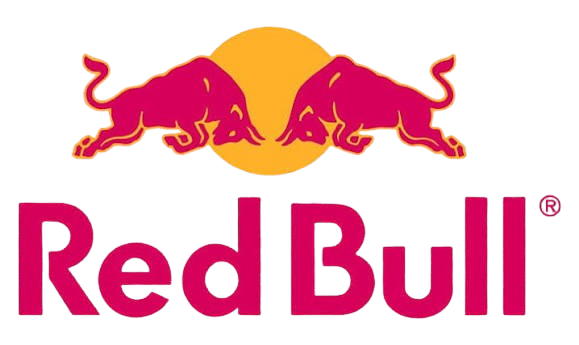
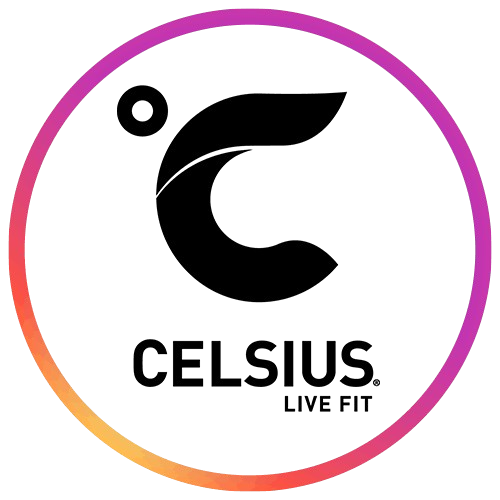

Project Overview
Industry: Energy Drinks and Soda — A fast-growing global beverage market where traditional high-sugar energy drinks compete directly with zero-sugar fitness and functional beverages.
Our Question: How do Red Bull’s marketing claims, ingredients, and corporate track record stack up against Celsius’s fitness-focused branding and public records?
Who This Site Is For: Everyday energy drink consumers, students, and athletes deciding which brand aligns best with their health goals and values.

Red Bull GmbH
Produces and markets energy drinks globally while organizing extreme sports events, media networks, and racing teams.
- Founded: 1984 (drink launched in 1987)
- Headquarters: Fuschl am See, Salzburg, Austria
- Employees: 21,924 (end of 2025)

Celsius Holdings, Inc.
Develops and markets zero-sugar functional fitness and energy drinks containing caffeine, green tea extract, and vitamins.
- Founded: 2004
- Headquarters: Boca Raton, Florida, USA
- Employees: 1,721 (as of May 2026)